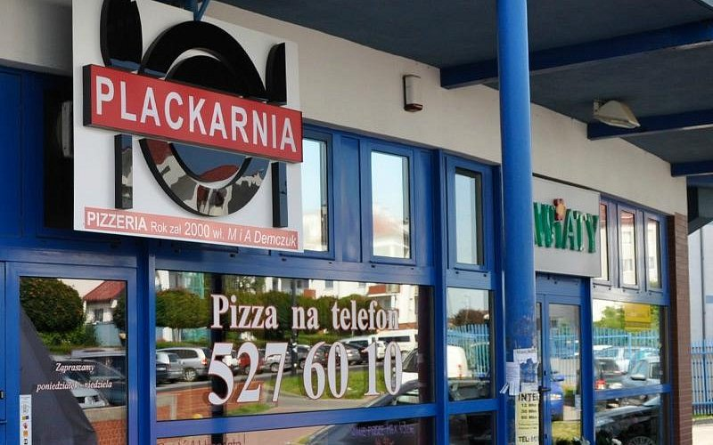
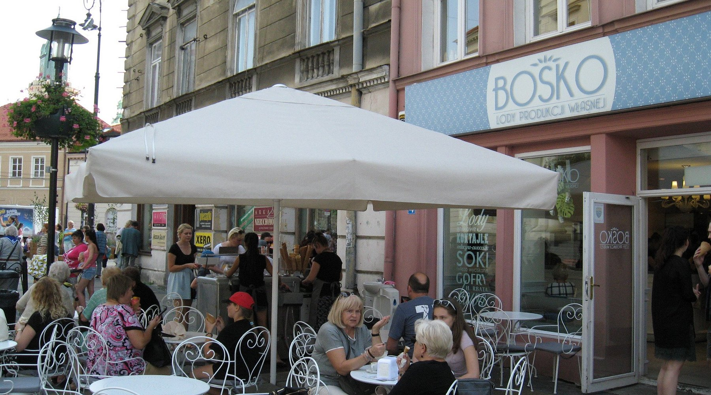
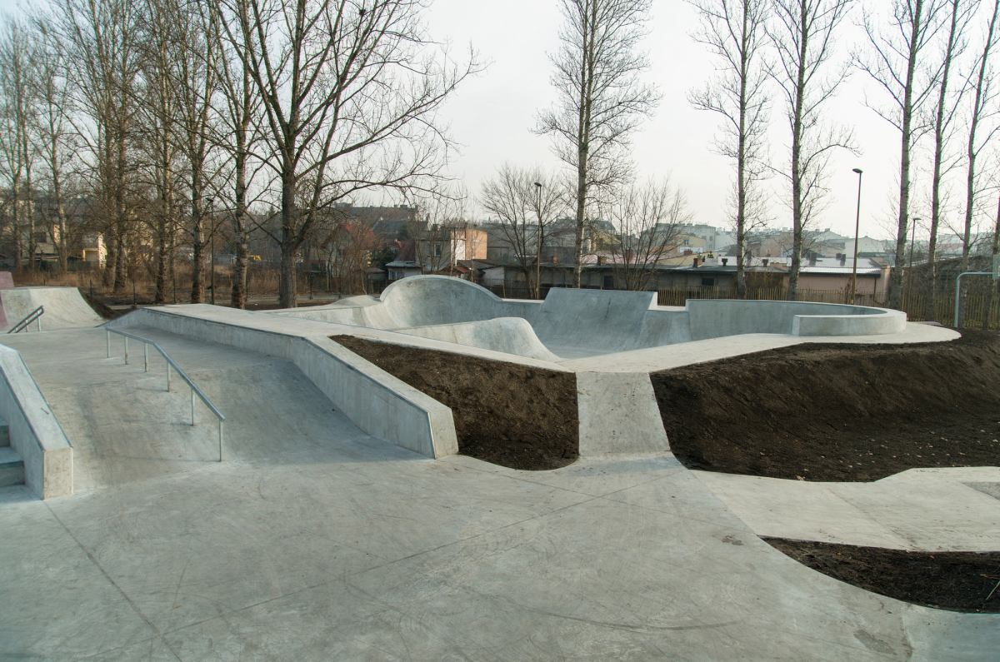
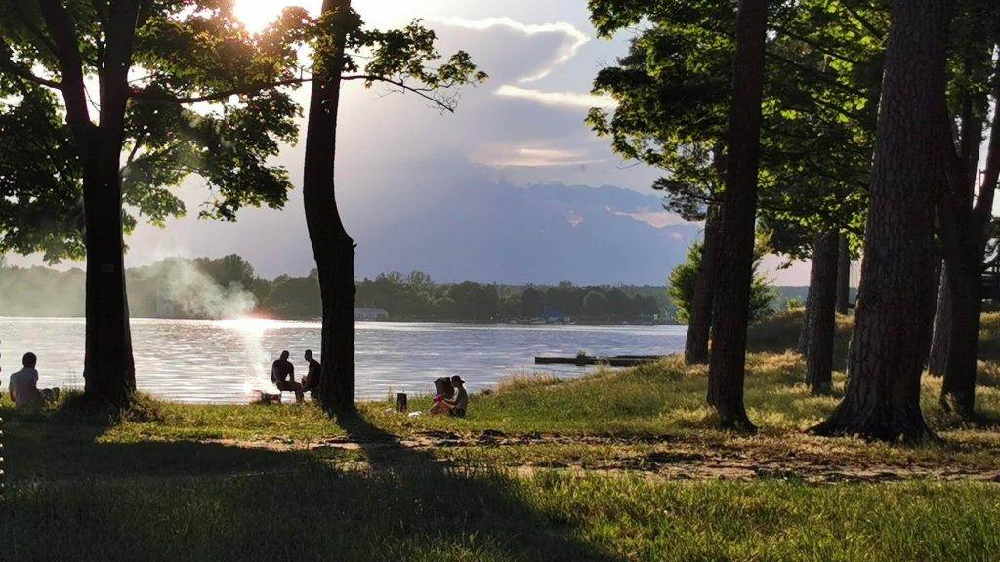
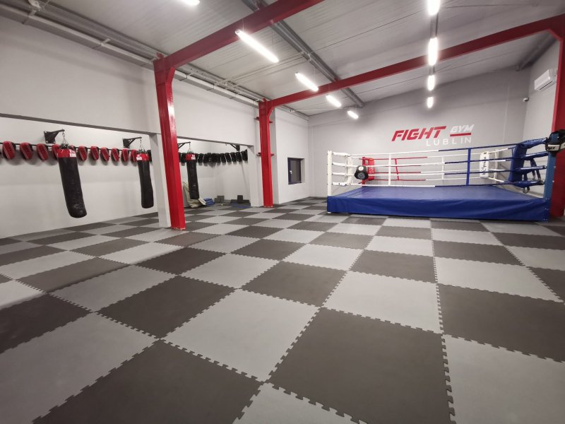
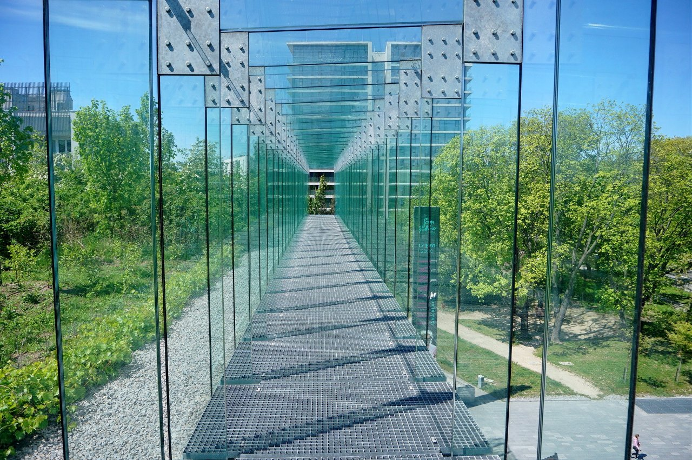
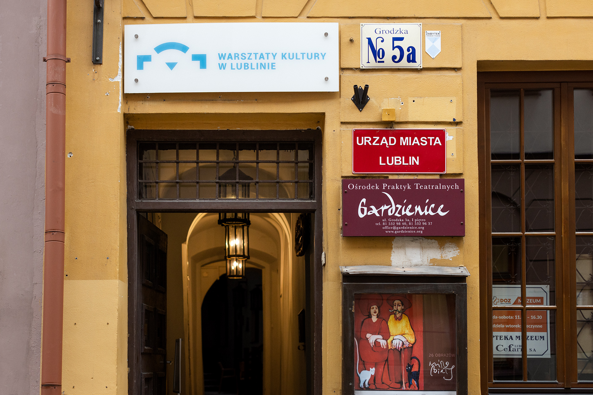
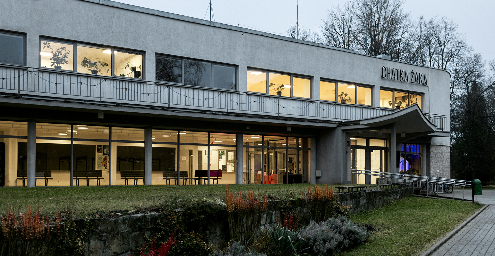

Plackarnia
Nie musisz już jeździć do śródmieścia, żeby spotkać się z przyjaciółmi i miło spędzić czas przy posiłku.
Vibe: LuźnyPrzewodnik po mieście bez nudy. Sprawdź nasze ulubione miejscówki, klimat i tipy!
Zaczynamy!
Nie musisz już jeździć do śródmieścia, żeby spotkać się z przyjaciółmi i miło spędzić czas przy posiłku.
Vibe: Luźny
Dania główne, burgery i pizze, idealne na szybki i tani wypad ze znajomymi między lekcjami.
Vibe: Luźny
Klasyk każdego ciepłego popołudnia. Kupujesz lody spacerujesz lub siadasz przy fontannach.
Vibe: Chill
Serce lubelskiej sceny streetowej. Idealne miejsce, jeśli śmigasz na desce, hulajnodze, bmx-ie lub po prostu chcesz pogadać ze znajomymi w luźnym klimacie.
Vibe: Ekstremalny
Najlepsza opcja na weekendowy reset. Wypożyczasz rower miejski, jedziesz trasą wzdłuż Bystrzycy i lądujesz na Słonecznym Wrotkowie na chillout przy wodzie.
Vibe: Chill / Active
Najlepszy reset po szkole. Nieważne, czy chcesz rzucać ciosy na worku, czy budować formę na siłce. Klimat, ludzie i trenerzy top, zero nudy i czysta zajawka.
Vibe: Aktywny
Kombinat nowoczesnej sztuki. Przeszklone, wiszące kładki, tarasy widokowe i miejska pasieka na dachu. Każdy zakątek to gotowy kadr na Twojego Instagrama.
Vibe: Modern / Insta
To stąd wychodzą najgłośniejsze akcje w mieście, jak Noc Kultury czy Carnaval Sztukmistrzów. Organizują darmowe kina plenerowe, warsztaty i alternatywne koncerty.
Vibe: Alternatywny
Studenckie centrum kultury, ale przyjazne też dla uczniów. Zobaczysz tu niszowe filmy w dyskusyjnym klubie filmowym za grosze i posłuchasz młodych zespołów.
Vibe: Studencki